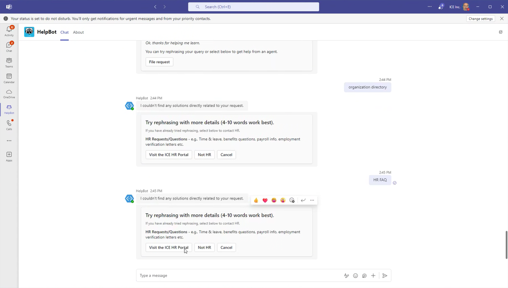
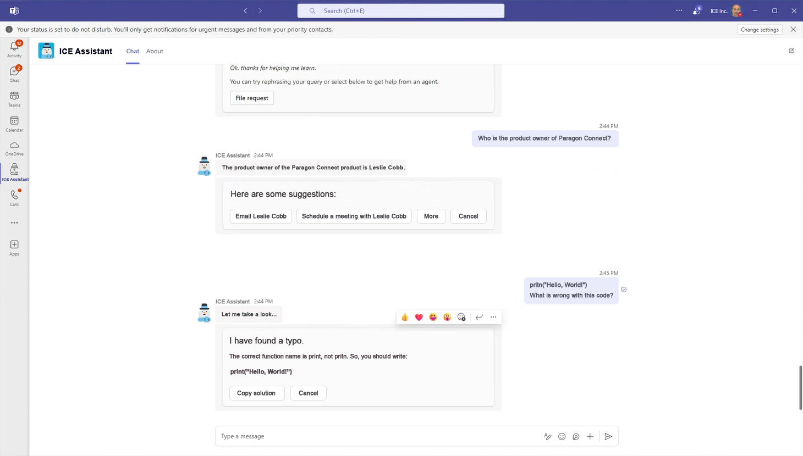

WCAG Compliance & Inclusive Design
[WCAG Training:
Learning Modules]
ICE Mortgage Technology's internal WCAG training videos were designed to teach employees about accessibility standards. There was just one problem: the training materials themselves weren't fully accessible. As part of a two-person intern team, I helped audit these learning modules and gather firsthand feedback from employees who rely on assistive technologies.
This proactive initiative gave us the opportunity to learn accessibility principles in motion—not just studying WCAG guidelines in theory, but applying them while interviewing real users about their daily experiences with the company's digital tools.
[Research:
Interview Notes]
We began by reaching out to differently-abled employees across the company, conducting interviews to understand what assistive tools they used and where they encountered friction. Employees shared their experiences with JAWS screen readers, magnification software, contrast enhancers, and font scaling—giving us direct insight into how accessibility gaps affected their workflows.
Beyond interviews, I worked on boosting engagement with our accessibility survey. Previous surveys on the team had received around 3-5 responses. By researching email timing strategies, crafting more compelling subject lines, conducting personalized outreach, and sending strategic reminder emails, I increased the response rate to 10—a 333% improvement that gave us richer data to work with.
I then validated interview findings by testing the training modules myself using screen readers, experiencing firsthand the barriers employees had described.
[Findings Report:
Priority Issues]
Screen reader compatibility emerged as the most significant issue. Content wasn't structured in ways that made sense when read aloud, and critical information was often buried in menus or hidden behind interactions that screen readers couldn't easily navigate.
Form labels were frequently inaccurate—a finding employees reported and I confirmed through testing. When a screen reader announces the wrong label, users have to guess what information a field requires, creating frustration and errors.
One of the most nuanced findings: platforms that disabled users' own accessibility tools while providing built-in alternatives. Even when the alternative was technically functional, it disrupted employees' established workflows. Users had invested time configuring their preferred tools—forcing them to adapt to a different system, even temporarily, created unnecessary cognitive load.
During the same internship, I had the opportunity to apply what I'd learned to a separate project: redesigning the concept for an internal AI chatbot. My team was exploring how AI could benefit the company, and my role was creating a mockup that visualized the pitch alongside security research my teammates presented.
The original "HelpBot" interface had several issues I now recognized from my accessibility work: formulaic language that felt robotic, generic visual identity, and responses that instructed users to "try rephrasing with more details (4-10 words work best)" rather than actually helping.
Before
After
My redesigned "ICE Assistant" addressed these issues: improved font contrast and sizing for readability, a personalized snowman icon that connected to the company brand, and conversational language that actually answered questions rather than deflecting. Instead of telling users their query was wrong, the assistant provided direct answers with actionable next steps.
We presented our findings to both stakeholders and the employees we'd interviewed. The interviewees approved our recommendations and—more importantly—felt heard. Our audit became a handoff document for future accessibility improvements, giving the team a clear roadmap of priorities.
This project fundamentally shaped how I approach design. I don't just think about accessibility as a checklist anymore—I understand it as designing for real people with real workflows that shouldn't be disrupted. That perspective carries into everything I do now: when designing surveys or research instruments, when building interfaces, when considering how someone might interact with my work using tools I've never personally needed.
The biggest takeaway isn't just what I learned—it's that I learned by doing. I took WCAG principles off the page and applied them through real user interviews, real testing, and real design iterations. That's the kind of thorough, invested learning I bring to every project.